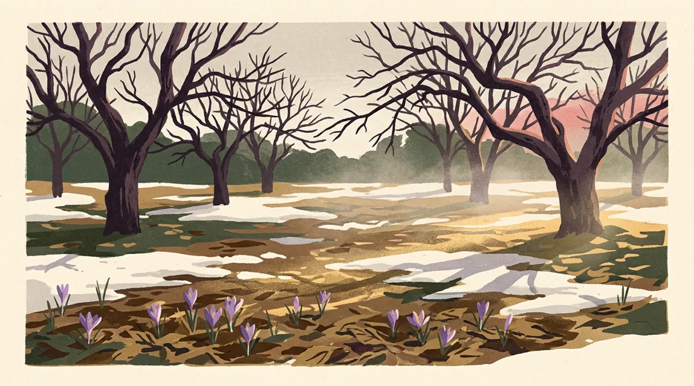

A short story for the turn of spring
Thaw

For eleven days the meltwater ran under the snow at Halloran’s orchard, invisible, loud as a rumour, and then on the twelfth the field simply gave up its white and lay there steaming in the sun. I went out in my father’s boots to see it. The apple trees were still black and unconvinced, but at their feet the crocuses had shouldered through last year’s leaves — forty or so, purple as bruises, shameless — and one bee, far too early and utterly certain, moved between them with the gravity of a man reading a ledger. I stood at the edge of the mud a long while with my hands in my sleeves and understood that nobody had decided any of this. The season had come the way sleep comes: all at once, from underneath, while everyone was busy being cold.